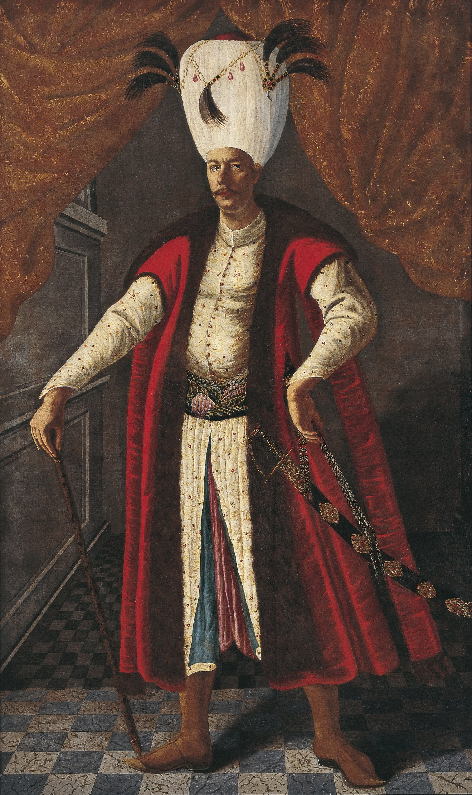

| önceki |  |
sonraki |
IV. Mehmed (Avcı Mehmed), Osmanlı İmparatorluğu'nun on dokuzuncu padişahı ve 84. İslam halifesidir. Babası Sultan İbrahim, annesi Turhan Hatice Valide Sultan'dır. Henüz 6 yaşında tahta oturmuş; 39 yıl süren saltanatıyla Kanunî Sultan Süleyman'dan sonra Osmanlı tahtında en uzun süre hüküm süren ikinci padişah olmuştur. Av tutkusundan dolayı "Avcı" lakabıyla anılmıştır. Saltanatı, Köprülüler ailesinin getirdiği altın bir toparlanma devrinden II. Viyana Kuşatması ve felaketler zincirine uzanan zıtlıklarla doludur.
Çocuk Yaşta Cülus ve Harem Çatışmaları
2 Ocak 1642 tarihinde İstanbul'da doğdu. Babası Sultan İbrahim'in tahttan indirilmesiyle 8 Ağustos 1648'de 6 yaşındayken tahta geçirildi. Çocukluk yıllarında saray, babaannesi Büyük Valide Kösem Sultan ile annesi Küçük Valide Turhan Sultan arasındaki kanlı iktidar savaşına sahne oldu. 1651 Eylülünde Kösem Sultan'ın bir saray darbesiyle boğdurulmasının ardından iktidar Turhan Sultan'a geçti.
1656 yılında yeniçeriler ve sipahilerin sarayı kuşatarak istedikleri 30 saray ağasının kellesini alıp Sultanahmet Meydanı'ndaki tarihi çınar ağacına asmaları hadisesi, tarihe "Vaka-i Vakvakiye" (Çınar Vakası) olarak kazındı.
Köprülüler Devri: Duraklama İçinde Yükseliş
Devletin uçuruma sürüklendiği bir anda, Valide Turhan Sultan'ın takdiriyle 1656 yılında Köprülü Mehmed Paşa kendi şartlarını (sarayın işlerine karışmaması, kararlarının sorgulanmaması) dikte ettirerek sadrazamlığa getirildi. Bu hamle devlete yarım asırlık bir diriliş kazandırdı:
- Köprülü Mehmed Paşa (1656 – 1661): Çanakkale Boğazı'ndaki Venedik ablukasını kırarak Bozcaada ve Limni'yi kurtardı; Erdel ve Anadolu isyanlarını tavizsizce bastırıp hazineyi doldurdu.
- Köprülü Fâzıl Ahmed Paşa (1661 – 1676): Avusturya üzerine yürüyerek efsanevi Uyvar Kalesi'ni fethetti (Avrupa dillerine "Uyvar önünde bir Türk gibi kuvvetli" atasözü girdi). 1664 Vasvar Antlaşması ile zafer taçlandırıldı. 24 yıldır devam eden Girit Savaşı, 1669'da Kandiye Kalesi'nin fethiyle zaferle neticelendi.
- Bucaş Antlaşması (1672) ve Batıda En Geniş Sınırlar: Padişahın bizzat katıldığı seferde Lehistan mağlup edilerek Podolya ve Kamaniçe alındı. Osmanlı Devleti batıda tarihinin en geniş sınırlarına ulaştı.
- Çehrin Seferi (1678): Rus Çarlığı ile yapılan ilk resmi harp ve barış olan Bahçesaray Antlaşması imzalandı.
II. Viyana Kuşatması (1683) ve Kutsal İttifak Harpleri
Sadrazam Merzifonlu Kara Mustafa Paşa'nın Osmanlı azametini Orta Avrupa'ya taşımak gayesiyle 1683 yılında giriştiği II. Viyana Kuşatması, Kırım Hanı Murad Giray'ın Tuna üzerindeki köprüleri tutmaması ve Lehistan Kralı Jan Sobieski'nin 12 Eylül 1683'te Kahlenberg tepelerinden devasa süvari hücumu yapmasıyla tarihi bir hezimete dönüştü. Merzifonlu Belgrad'da idam edildi.
Viyana bozgununun ardından Papalık önderliğinde Avusturya, Lehistan, Venedik, Rusya ve Malta'dan müteşekkil "Kutsal İttifak" kuruldu. Osmanlılar 16 yıl sürecek çok cepheli kanlı harplere sürüklendi. 1686'da 145 yıllık Osmanlı serhaddi olan Macaristan'ın kalbi Budin (Budapeşte) düştü.
Tahttan İndirilişi ve Vefatı
Budin'in ve Mohaç'ın kaybedilmesi üzerine Edirne'de toplanan yeniçeriler ve devlet ricali, vaktinin çoğunu Edirne civarında avlanarak geçirmekle suçladıkları IV. Mehmed'i 8 Kasım 1687'de tahttan indirdiler. Yerine kardeşi II. Süleyman geçirildi.
Hayatının kalan 5 yılını Edirne Sarayı'nda hapis hayatı yaşayarak geçiren IV. Mehmed, 6 Ocak 1693'te vefat etti. Cenazesi İstanbul'a getirilerek annesi Turhan Hatice Valide Sultan'ın tamamlatıp açtığı Eminönü Yeni Cami avlusundaki Turhan Valide Sultan Türbesi'ne defnedildi.
Ailesi
- Eşleri:
- Emetullah Râbia Gülnûş Vâlide Sultân (Girit asıllı, II. Mustafa ve III. Ahmed'in annesi)
- Afife Sultân
- Gülnar Hâtûn
- Erkek çocukları:
- II. Mustafa (Osmanlı Padişahı, 1664 – 1703)
- III. Ahmed (Osmanlı Padişahı, 1673 – 1736)
- Şehzade Bayezid (1678 – 1679)
- Şehzade Süleyman (1681 – 1685)
- Kız çocukları:
- Hatice Sultân (Sadrazam Musahip Mustafa Paşa ve Moralızade Hasan Paşa ile evlendi)
- Fatma Sultân (Kara Mustafa Paşa'nın oğlu Ali Paşa ile evlendi)
- Ümmügülsüm Sultân (Küçük Osman Paşa ile evlendi)
IV. Mehmed hakkında daha fazla bilgi için buraya tıklayın.